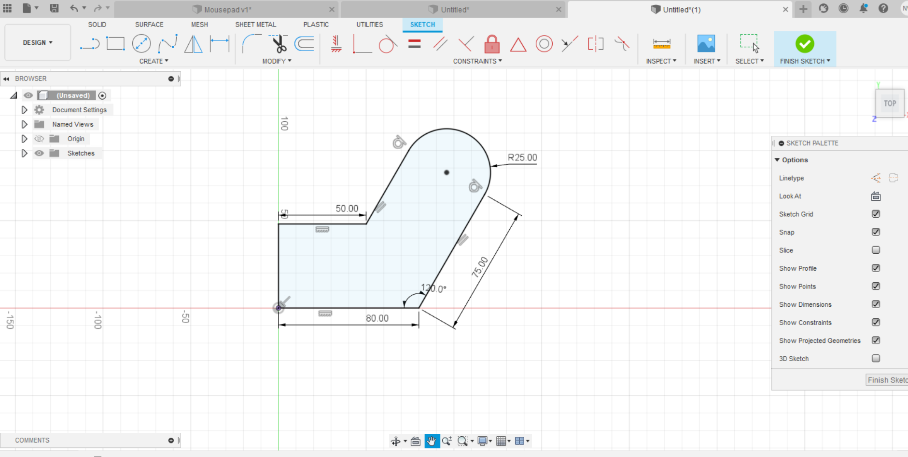
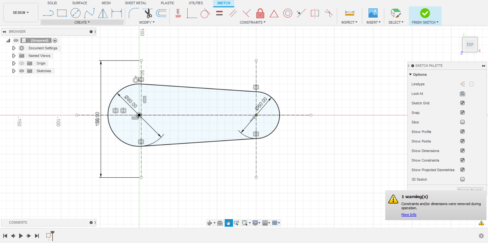
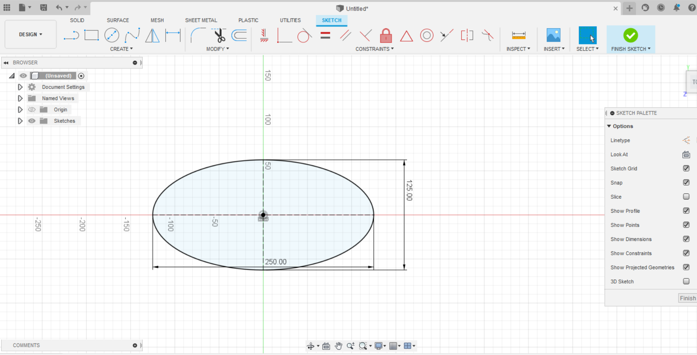

I did the first fusion 360 tutorial provided on the website, it took me a while to figure it out but I think I can say that I've got the hang of it
The first shape was the most annoying as I was trying to get all the dimensions perfectly right but it taught me the importance of the create dimensionm tool
In the second one, I found the tangent tool pretty weird to use. Although this isnt exactly like the one in the tutorial, it makes use of all the same features
The third one was the easiest as I had already gotten the hang of it from the earlier figures
